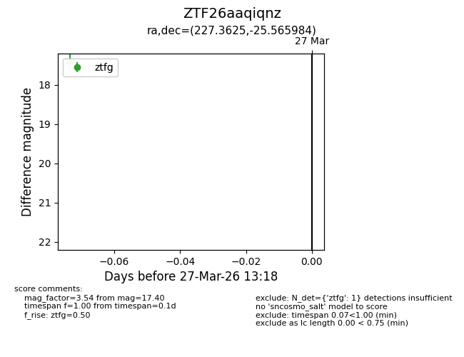
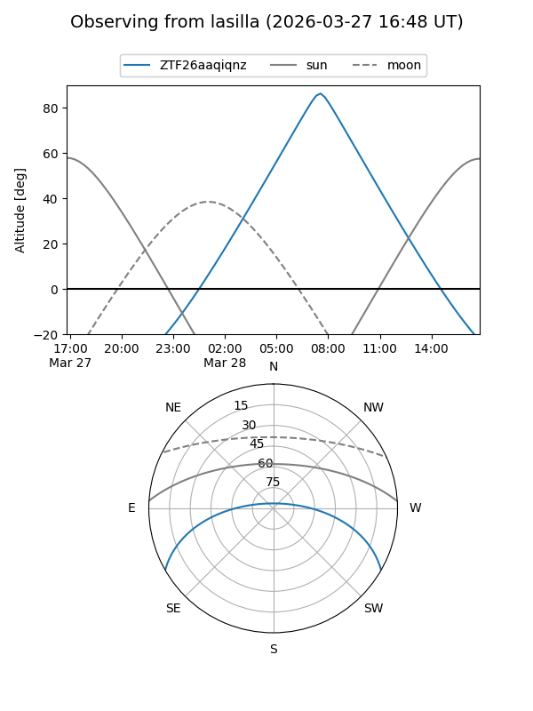
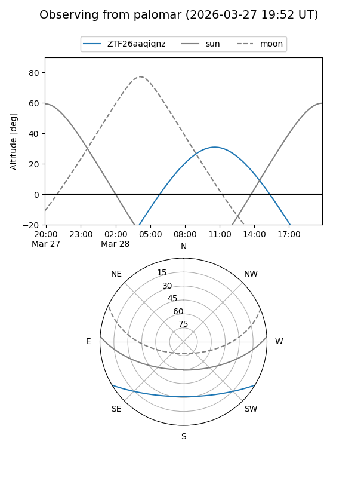

ZTF26aaqiqnz
Target ZTF26aaqiqnz at 2026-03-27 13:20
Aliases and brokers:
FINK: link
Lasair: link
ALeRCE: link
alt names
ZTF26aaqiqnz (ztf,fink_ztf)
Coordinates:
equatorial (ra, dec) = 227.3625,-25.56598
equatorial (HMS+DMS) = 15:09:27.01,-25:33:57.54
galactic (l, b) = (338.1810,+27.70014)
Flags:
Photometry:
last ztfg=17.40
1 ztfg detections
Lightcurve

Visibility


Additional plots